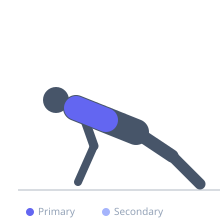

Exercise guide / Scapular Push-Up on Elevated Box
Scapular Push-Up on Elevated Box
A scapular push-up performed with hands elevated on a box, bench, or step. The incline reduces the percentage of bodyweight being supported, making it easier than the floor version for people who cannot yet perform the floor version with good form. The same protraction-retraction scapular motion is trained without the full bodyweight load. Used in early-stage shoulder rehabilitation to introduce scapular movement under partial load before progressing to the floor version.
Primary muscles
pectoralis minor
trapezius lower
Secondary muscles
trapezius middle
Stabilizers
triceps long head
transverse abdominis
Equipment
No Equipment (Bodyweight)


Starting position
- Place hands on the edge of a bench, box, or step approximately shoulder-width apart. Extend the body into a plank with the arms fully locked. The body angle depends on box height — a higher box means less bodyweight load.
Setup
- Choose box height based on current ability. Start at a height that allows 15-20 smooth reps with full scapular motion before progressing lower.
Steps
- Step 1: Begin in an incline plank on the box, elbows fully locked, body rigid.
- Step 2: Allow the shoulder blades to retract (pinch together), letting the chest drop slightly toward the box.
- Step 3: Push the box away with both hands to protract the scapulae, rounding the upper back and spreading the shoulder blades wide.
- Step 4: Return to retraction. Repeat — elbows remain locked throughout.
Coaching cues
- Arms absolutely straight — if they bend, you are doing a push-up
- Spread the shoulder blades as wide as possible at the top
- Keep the whole body in a rigid line — only the shoulder blades move
Breathing
- Exhale during protraction (spread). Inhale during retraction (pinch).
Range of motion
- Full protraction to full retraction is the goal. The range is small — the chest drops and rises only a few centimeters.
Tempo
- 2s retract, 1s hold, 2s protract, 1s hold at top.
Common mistakes
- Bending the elbows — elbows must stay locked. This is not a push-up.
- Moving the hips or losing the plank position during the motion
- Moving too fast — slow movement ensures scapular isolation
Safety
- This is the regressed version of the floor scapular push-up — use it when the floor version is too challenging
- Progress to the floor version when 20 controlled reps are achieved at this height
Training
- endurance: 10–20 reps
- endurance: 2–3 sets
- Rest: {'endurance': 45}